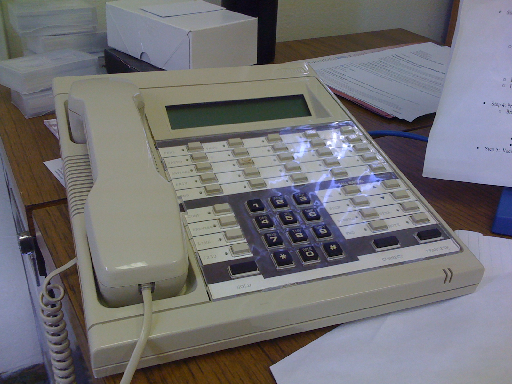

The Phone That Had No Switchhook
ROLM's digital PBX turned the switch into a minicomputer and every desk phone into a terminal. The RolmPhone 400 had soft keys reprogrammed from the wiring closet — and no physical hook at all, just a magnet in the handset and a reed switch in the base.

There is a gesture so ancient in telephony that almost nobody thinks of it as an interface: you hang up. For a hundred years, that act was mechanical and unmistakable. The handset sat on a hook with a spring-loaded plunger underneath, and your simple act of putting the handset down pushed that plunger, literally breaking the electrical connection. You could feel the click. The telephone's most fundamental switch — on or off, connected or not — was a physical button, and the button was the phone's most human part.
The ROLM RolmPhone 400 had no such button. It could not have one.
The switch became a minicomputer
ROLM of Santa Clara made military computers — ruggedized versions of the Data General Nova. In 1975 its founders bet the company on a strange conviction: that a telephone switch is just a program. They built the CBX, the first fully digital computerized PBX, running on a general-purpose ROLM 1603 minicomputer. For the first time, call routing, features, and network provisioning all lived in software on a real, programmable computer instead of in racks of electromechanical relays and crossbars.
That decision had a side effect nobody particularly advertised. If the switch is a computer, then every phone plugged into it is not a device with fixed buttons — it is a terminal. And a terminal's face can be redrawn.
The RolmPhone 400, named for its 40 keys, made that literal. Of those 40 buttons, 38 were feature and line keys that were not wired to any telephone line at all. They were soft keys, reconfigurable from the CBX switch itself — the phone company's office, or the facilities manager's closet, could reprogram your desk phone remotely. The same button that said "line one" today could say "park," "conference," or "pick up extensions 5-9" tomorrow. Only the two volume buttons were hardwired. It was a phone whose surface was drawn in software, years before the term "soft key" entered the floor of every contact center.
The handset was the button
And then there was the hook. ROLM removed the switchhook entirely and replaced it with the strangest object the desk had ever seen: a tiny permanent magnet embedded in the handset, and a reed switch in the base. When you set the receiver down, the magnet sat over the reed switch and closed the circuit. When you lifted it, the magnetic field broke and the phone marked itself off-hook. On-hook and off-hook state — the oldest, most procedural state in telephony — became a property of where the plastic happened to be, sensed by a magnetic field through the body of the phone.
No spring. No plunger. No click you could feel with your thumb. The very notion of "hanging up" had mutated from an action that throws a physical switch into a kind of ambient sensing — the machine noticed that the handset had left its nest and quietly connected you.
The telephone loses its mechanic
This is the quiet revolution the Novation CAT and Hayes Smartmodem were the modem side of, but the ROLM CBX is the switching side, and it is more thorough. Those modems were about getting data onto a telephone line. ROLM was about the telephone line itself graduating from a bunch of physical switches into a general-purpose computer — with PhoneMail, one of the first commercial voice mail systems, running on the same box.
For the people who used it, the effect was unnerving in the best way. The AT&T VideoPhone 2500 and the Minitel put a screen on a phone or a terminal at home. The TI Silent 700 made the acoustic coupler a ritual. But the RolmPhone hid its computer-ness inside the most familiar object in the office. It looked like a desk phone, and yet every button on it was a lie until the switch decided what it meant, and the gesture you had used your whole life to hang up no longer threw a switch — it just drifted a magnet across a reed.
The terminal you thought was a phone
I love this artifact because it inverts the direction of surprise. Usually the museum's computers are obvious machines that do strange things. The RolmPhone 400 is the reverse: a completely ordinary thing, and underneath, everything has been replaced with software. The phone became a terminal whose face is redrawn by a program, and the last remaining piece of honest mechanics — your thumb pressing down on the hook — was quietly swapped for a magnetic field.
It is the moment the object that had always been a switch became a screen. And the screen, at first, didn't even show you anything. It just apologized for not being a switch anymore, and asked you to trust the magnet.
— Beepy